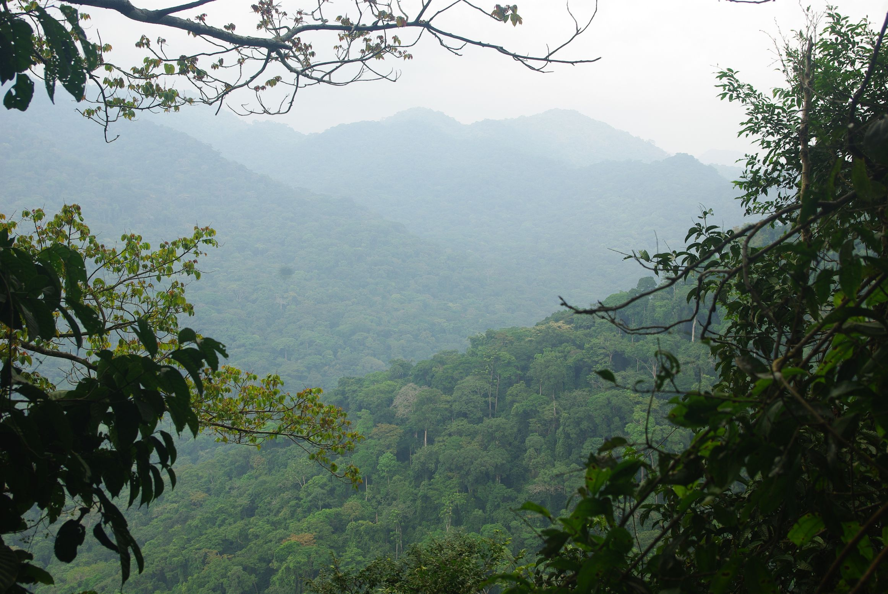

Below is a selection of some of the videos we film when in the field. These are amateur videos, mounted and edited by myself in my spare time. It is a nice way to communicate about our work in the field. For more videos visit my Youtube channel. There are also links to other out reaches I have done on podcasts and online events.
A botanical expedition to the deep Amazon region of the Reserva Faunistica Cuyabeno, Orellana, Ecuador. Once again we visited a little-explored region of Ecuador. We traveled by car and then boat for two days.
A video of our botanical expedition to collect Annonaceae in the #Sápara territory, #Pastaza region of #Ecuador. This region is little explored. We took a small plane to the Balsaura community, where we were hosted by Narcisa and Juan Pio. The expedition was under the guidance of Cesario Santi, from the #Sápara nationality.
A short video on Anelio Loor, a real-life conservation hero, protecting one of the last remnants of Choco rainforest in lowland western Ecuador. Great Leaf is leading numerous activities to support Anelio, and especially integrate the community of El Sapote in this last chance effort. See more on their website and how you can visit and or help.
Exploration of Los Cedros Reserve in the Andean Choco of Ecuador. We went looking for the rarest and most endangered palm species of Ecuador. This was funded by an IUCN SSC Internal grant and was done within the framework of Najeli Jijon's master project at the PUCE.

Podcast on "In Defense of Plants"
Podcast interview (46 min) with Matt from In Defense of Plants about tropical rain forest evolution.